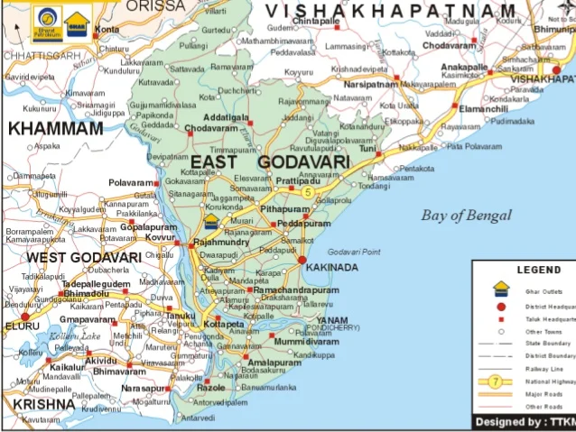
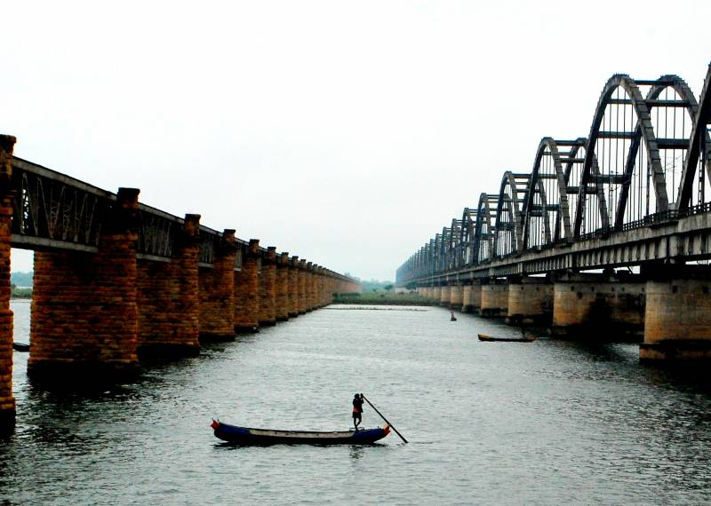
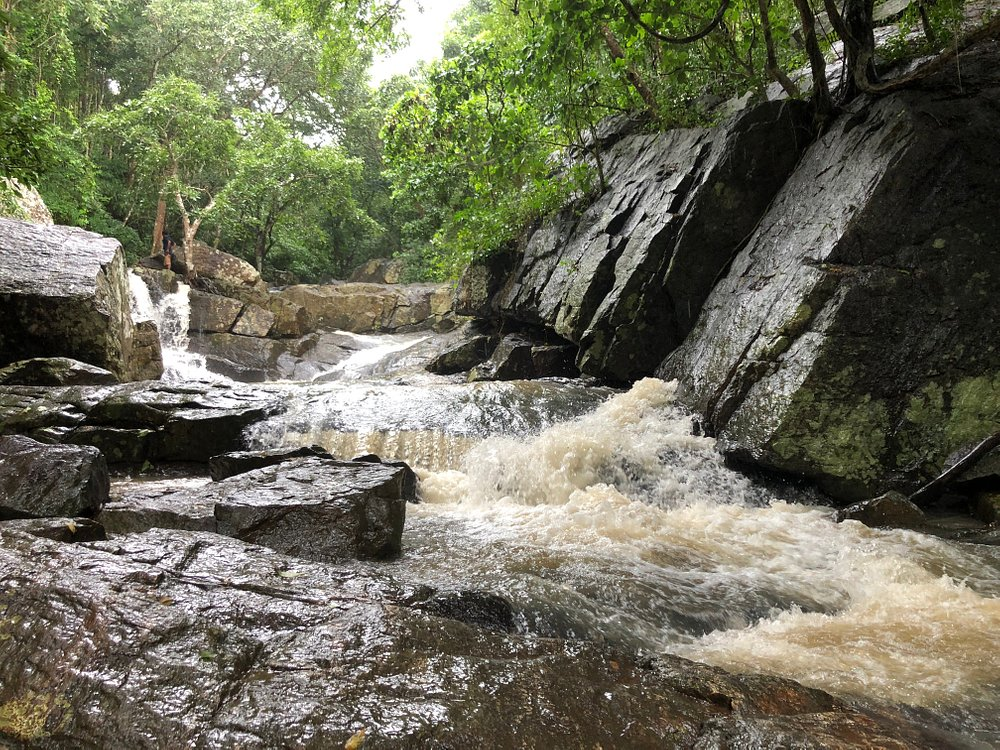
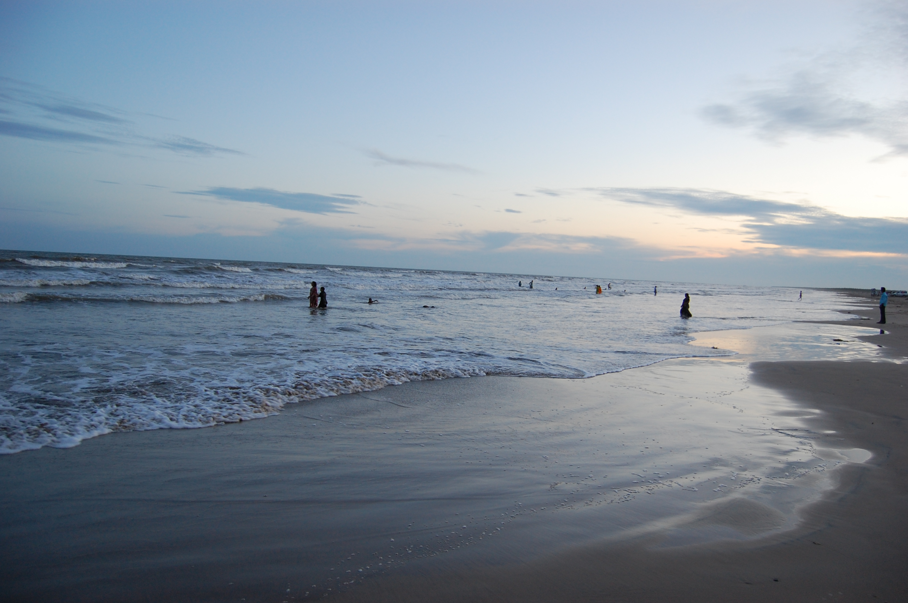

EAST GODAVARI
East Godavari is a district in the Coastal Andhra region of Andhra Pradesh, India. Its district headquarters is at Rajamahendravaram. In the Madras Presidency, the District of Rajamahendravaram was created in 1823.[6] It was reorganised in 1859 and was bifurcated into Godavari and Krishna districts. During British rule, Rajamahendravaram was the headquarters of Godavari District, which was further bifurcated into East Godavari and West Godavari districts in 1925. When the Godavari district was divided, Kakinada became the headquarters of East Godavari and Eluru became headquarters of West Godavari.[7][8] In November 1956, Andhra Pradesh was formed by merging Andhra State with the Telugu-speaking areas of the Hyderabad State. In 1959, the Bhadrachalam revenue division, consisting of Bhadrachalam and Naguru Taluqs (2 Taluqas in 1959 but later subdivided into Wajedu, Venkatapruram, Charla, Dummugudem, Bhadrachalam, Nellipaka, Chinturu, Kunavaram, and Vara Rama Chandra Puram Mandals) of the East Godavari district were merged into the Khammam district.[9] After June 2014's reorganisation and division of Andhra Pradesh, the mandals of Bhadrachalam (with the exception of Bhadrachalam Temple), Nellipaka, Chinturu, Kunavaram and Vara Rama Chandra Puram were re-added back to the East Godavari district.[10]

HISTORY
Early kingdoms This section does not cite any sources. Please help improve this section by adding citations to reliable sources. Unsourced material may be challenged and removed. (January 2022) (Learn how and when to remove this message) The district, like the rest of the Deccan, was under the Nandas and Mauryas in its early history. After the fall of the Mauryan Empire, the district was under the Satavahanas until the 3rd century under the famous poet king Haala. Coins found during excavations have revealed the rule of Gautamiputra Satakarni, Vaasisthi-puttra Pulumaavi and Yajna Sri Satakarni. Gupta emperor Samudragupta invaded during the rule of both Pishtapura and Avamukta in the district in 350 AD Samudragupta's invasion was followed by the rule of the Mathara dynasty from 375 to 500. The earliest known ruler of the dynasty was Saktivarman. The district passed into the hands of Vishnukundinas during the rule of Vikramendra Varma I during the 5th century. The records indicate that their domain extended over Visakhapatnam, West Godavari, Krishna and Guntur districts in addition to East Godavari. Indra Bhattaraka defeated the rulers of Vasistha Kula and re-established Vihsnukundina authority, but was shortly defeated by Kalinga armies. Indra Bhattaraka was followed to the throne by a few others, including Madhava Varma III and Manchana Bhattaraka, who tried to restore their kingdom. Madhava Varma III was the last important ruler of this family. Chalukyas and Cholas This section does not cite any sources. Please help improve this section by adding citations to reliable sources. Unsourced material may be challenged and removed. (January 2022) (Learn how and when to remove this message) The Pulakesi II of Badami Chalukyas and his brother Kubja Vishnu Vardhana acquired Pishtapura in the 7th century. The Eastern Chalukya dynasty, founded by Kubja Vishnu Vardhana, ruled at first form Pishtapura, then from Vengi, and later from Rajamahendravaram. Many rulers held sway over the kingdom and their history is at times largely a record of disputes over succession. Chalukya Bhima I of this dynasty built a Shiva temple at Draksha Ramam. Jata Choda Bhima of PedaKallu (Kurnool District) killed Daanaarnava of this dynasty and occupied Vengi in 973 AD Daanaarnava's two sons, Sakti Varma I and Vimala Aditya, fled from the kingdom and took refuge in the court of the Chola king Rajaraja Chola I. Rajaraja invaded Vengi on behalf of the sons of Daanaarnava and killed Jata Choda Bhima. Satya Raya of the Western Chalukyas of Kalyani did not like the Chola influence in Vengi and the area witnessed many wars between the Cholas and Chalukyas. After the death of Vijaya Aditya VII in 175 AD, the Eastern Chalukya dynasty came to an end.
EARLY HISTORY
The "Godavari district" was formed with its headquarters at Rajamundry later the district was divided into two East Godavari and West Godavari at its headquarters at Eluru but the district headquarters of East Godavari was shifted from Rajamundry to Kakinada.On 4 April 2022 the East Godavari again divided in two Kakinada and East Godavari,Kakinada remains the district headquarters of Kakinada district and again the district headquarters was shifted to Rajamundry.[citation needed]


 
ECONOMY
Agriculture and its allied activities is the backbone of East Godavari district's economy. Rajamahendravaram is a major business centre and Kakinada are the major industrial zone. It is the largest producer of paddy and tender coconuts in Andhra Pradesh. The gross district domestic product (GDDP) of East Godavari is ₹522.94 billion (US$6.3 billion) and it contributes 10% to the Gross State Domestic Product (GSDP). For the FY 2013–14, the per capita income at current prices was ₹78,255 (US$940). The primary, secondary and tertiary sectors of the district contribute ₹160.93 billion (US$1.9 billion), ₹108.57 billion (US$1.3 billion) and ₹253.43 billion (US$3.0 billion) respectively.[16] The major products contributing to the GVA of the district from agriculture and allied services are, paddy, sugarcane, betel leaves, coconut, milk, meat and fisheries. The GVA to the industrial and service sector is contributed from construction, electricity, manufacturing, unorganised trade and transport.[16] In addition to these, aquaculture plays a significant role in the coastal mandals of the district, particularly shrimp farming which is exported to international markets such as the USA, Japan, and Europe. Kakinada SEZ and the Kakinada Deep Water Port have boosted industrial growth, attracting petroleum, fertiliser, and edible oil industries. The ONGC base at Kakinada and Gas Authority of India projects have further enhanced the industrial profile of the region. Coconut-based industries, rice mills, and jaggery production also provide employment to thousands of locals. With fertile Godavari delta lands, mechanised farming is widespread, and advanced irrigation methods ensure high yields. The service sector, particularly education, healthcare, and retail, has seen rapid expansion due to increasing urbanisation. Banking, insurance, and small-scale manufacturing also contribute steadily to the economy. Tourism related to Godavari river cruises, heritage temples, and eco-parks is emerging as a supplementary income source. The district’s economic diversity, supported by both traditional agriculture and modern industries, ensures resilience and continuous growth.
CULTURE
The culture of East Godavari and West Godavari districts is a rich traditional one in all parts of the district and reflects the true culture of Andhra Pradesh. It is known for Veda-pandits, the Godavari River and the hospitality of the people. Rajamahendravaram city is known as the "Cultural Capital of Andhra Pradesh". Durga Cinetone is the first South Indian film studio constructed in the city of Rajamahendravaram. The government of Andhra Pradesh is constructing film studios in Kakinada and Rajamahendravaram cities on PPP mode.[citation needed] East Godavari has produced several stalwarts in an area of culture, music, art, and cinema.[26] Festivals such as Sankranti, Ugadi, Dasara, and Deepavali are celebrated with grandeur, often marked by vibrant processions, cultural performances, and elaborate feasts. The river Godavari plays a central role in religious rituals, especially during Pushkaralu, a once-in-12-years festival attracting millions of pilgrims. Classical arts like Kuchipudi dance and Carnatic music are nurtured here through schools and cultural organisations. Handloom weaving, particularly in places like Mummidivaram, produces fine sarees and fabrics that are cherished across the state. The literary tradition is strong, with poets, writers, and scholars contributing to Telugu literature over centuries. Folk traditions such as Harikatha, Burrakatha, and street plays remain popular in rural areas, often conveying moral and historical stories. Temple architecture in Draksharamam, Antarvedi, and Kotipalli stands as a testament to the district’s spiritual heritage. The film industry influence is significant, with local talent often making a mark in Tollywood. The cuisine of the region reflects its culture — from the spicy pappu and pulusu to sweet treats like Pootharekulu and Kaja. The blend of modern entertainment with age-old customs makes the culture of East Godavari both dynamic and deeply rooted in tradition.
TRANSPORT